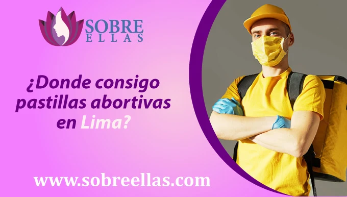
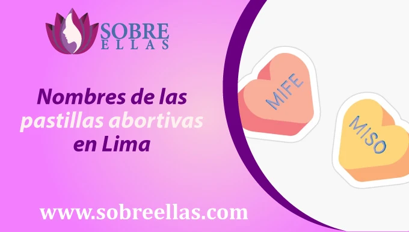
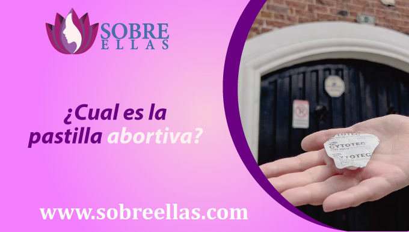

Pastillas abortivas en Lima
-
addContenidoDonde consigo pastillas abortivas en Lima Aborto en Lima ¿Cómo conseguir Cytotec en Peru? Metodos abortivos en Lima Nombres de las pastillas abortivas en Lima Precios de las pastillas abortivas Dosis de misoprostol para abortar Zonas de Reparto en Lima ¿Cómo tomar la pastilla abortiva misoprostol? ¿Es seguro tomar misoprostol? Es legal la vena de las pastillas abortivas sin receta Solucion a los efectos secundarios de tomar misoprostol para abortar
Las pastillas abortivas en Lima consisten en dos tipos de medicamentos: mifepristona y misoprostol. La mifepristona bloquea la hormona progesterona, y el misoprostol ayuda a interrumpir el embarazo.
Las pastillas abortivas se pueden comprar en línea o en una clínica. El coste de las pastillas abortivas varía, pero suelen ser más baratas que hacerse un aborto en una clínica. Las pastillas abortivas se pueden tomar en casa o en una clínica. Las pastillas abortivas son fáciles de obtener en Lima a través de nuestro sitio web. Simplemente escriba a WhatsApp y le ayudaremos a obtener las pastillas abortivas que necesita.
¿Donde consigo pastillas abortivas en Lima?
EHay diferentes farmacias en Lima donde puedes obtener píldoras abortivas. Sin embargo, recuerde que estas farmacias le pedirán una receta, Las siguientes son farmacias que pueden vender Pastillas Abortivas con una Receta Médica:
- Mifarma, Avenida defensores del morro 2070
- Inkafarma, Av. Canadá 4094
- Boticas Fameza, Av. Guardia Civil, La campiña 346 - 978
Si quieres tener un aborto en Lima, hay algunas farmacias y farmacias donde puedes comprar pastillas abortivas. Las píldoras abortivas son de venta libre en la mayoría de las farmacias, y también se venden en línea.
Las píldoras abortivas funcionan al terminar el embarazo, y son muy fáciles de usar. Las píldoras abortivas se toman por vía oral y actúan rápidamente para interrumpir el embarazo.
Las píldoras abortivas son una forma segura y efectiva de abortar, y son el método de aborto más recetado en Lima. Si desea tener un aborto en Lima, no se preocupe: también hay otras opciones disponibles. las píldoras abortivas son solo una opción, y hay otros métodos de aborto disponibles en Lima, como el aborto quirúrgico.
Aborto en Lima
Si está buscando un aborto en Lima, puede encontrar cierta oposición de sus amigos y familiares. Esto se debe a que muchas personas en la ciudad no son conscientes de lo que viven las madres jóvenes cuando tienen que enfrentar un mundo sin suficientes oportunidades para salir adelante, muchos de sus objetivos se pausan o incluso se cancelan, como estudios, trabajos, proyectos personales, etc.
Hoy en día, se puede realizar un aborto discreto en casa o en una habitación de hotel. Sólo toma unas pocas horas y puedes seguir con tu vida sin ningún problema. Por lo tanto, recomendamos encarecidamente este método de aborto en la ciudad. Obtenga las píldoras abortivas de nuestro sitio web, la entrega es inmediata y su caso es 100% seguro y discreto.
Como hemos mencionado, el aborto en Lima se puede realizar de diferentes maneras, una es el aborto quirúrgico y la otra es a través de píldoras abortivas (medicamentos) que pueden ser:
- Misoprostol
- Mifepristona
- Otras marcas derivadas del misoprostol
Metodos abortivos en Lima
Aborto quirúrgico: El método más utilizado en los Estados Unidos, es un procedimiento en el que un médico utiliza una herramienta quirúrgica para extirpar el embarazo.
Aborto con plantas medicinales: Un método utilizado en Lima en el que la mujer toma una serie de plantas diferentes, como la manzanilla, el gordito y la salvia, y las pone en una taza. Luego, lleve la taza a su médico, quien la curará y se la dará. Entonces la mujer beberá la poción. La poción comenzará a surtir efecto rápidamente, y en unas pocas horas, la mujer comenzará a sentir una sensación de alivio.
Píldora abortiva de misoprostol: Una píldora que se toma para interrumpir un embarazo. La píldora se toma después de que la mujer ha tenido relaciones sexuales. La píldora actúa deteniendo el flujo de sangre hacia el bebé.
Nombres de las pastillas abortivas en Lima
Lima es una región del Perú donde se pueden encontrar y comprar píldoras abortivas. El misoprostol es el compuesto médico utilizado por muchas marcas de píldoras abortivas, y se puede pedir genéricamente en las farmacias. Sin embargo, hay otras marcas de píldoras abortivas disponibles en Lima.
Misoprolen Lima
Mifeprex Lima
Cytotec Lima
Cyprostol Lima
Precios de las pastillas abortivas
Las píldoras abortivas de Pfizer Laboratories son muy efectivas y asequibles, lo que las convierte en una excelente opción para aquellas que desean interrumpir un embarazo. Sin embargo, si tiene más de 12 semanas de embarazo, su efectividad puede reducirse. Por lo tanto, le recomendamos que llame a nuestro personal médico, que le informará de cuántas píldoras debe tomar de acuerdo con su semana de gestación.
En nuestro centro de salud ofrecemos píldoras abortivas de los laboratorios Pfizer. Estas píldoras cuestan 18,30 soles cada una, lo que significa que un paquete de 12 costará 219.16 soles. Si tiene menos de 12 semanas de embarazo, la efectividad de estas píldoras es del 98%.
¿Cual es la pastilla abortiva?
Hay varios métodos disponibles para obtener un aborto, incluida la píldora abortiva ( citotec, mifepristona, misoprostol). La píldora abortiva es una forma segura y efectiva de interrumpir un embarazo. Es importante recordar que el aborto es una decisión que debe tomarse con cuidado y con la guía de un profesional de la salud
¿Cómo comprar la píldora abortiva?
La píldora abortiva es muy fácil de comprar. El proceso es rápido y le proporcionamos toda la seguridad necesaria durante su proceso de compra.
En primer lugar, deberá informar al personal médico de la semana de su embarazo. Se le preguntará acerca de ciertos síntomas y si usted ha tenido una prueba de embarazo antes de ponerse en contacto con ellos.
A continuación, deberá responder preguntas sobre su salud y embarazo. A continuación, el personal médico le dirá las tasas de la píldora abortiva. También le informarán del lugar y el método de pago que elija
Si tiene alguna pregunta, no dude en ponerse en contacto con nuestro equipo. Estaremos encantados de ayudarle en la medida de lo posible.
Dosis de misoprostol para abortar
Si tiene menos de 12 semanas de embarazo, debe tomar 12 tabletas de misoprostol. Si está embarazada entre las semanas 12 y 16, debe tomar 16 tabletas de misoprostol. Si tiene más de 16 semanas de embarazo, es posible que deba tomar más misoprostol, dependiendo de su estado de gestación. Si se pone en contacto con nuestro equipo médico en línea a través de WhatsApp, pueden recomendarle una mejor dosis.
Zonas de Reparto en Lima
Lima cuenta con 3 provincias a los que se hace el delivery a continuación te brindamos más información de cytotec donde comprar Lima :
- Lima
- Puerto Inca
- Leoncio Prado
- Marañon
- Huamales
- Pachilea
- Lauricocha
- Huacaybamba
- Ambo
- Dos de mayo
- Yarowilca
La entrega en Lima es completamente gratuita, solo tienes que confirmar tu compra y la entrega se acercará a tu domicilio o a la ubicación que hayas especificado en nuestro personal de WhatsApp. ¡No busques más ni te preocupes, porque nosotros cuidamos de tu seguridad!
¿Cómo tomar la pastilla abortiva misoprostol?
Tome la píldora de acuerdo con las instrucciones del médico. Tenga en cuenta que hay dos maneras de hacer esto: cytotec vaginal y cytotec oral. El comprimido de cytotec debe introducirse en la vagina lentamente o permanecer en la boca hasta disolverse e ir pasando la solución y debe esperar a que la píldora surta efecto.
Este proceso se hace con 3 pastillas y debe repetirse cada 30 minutos, pero recomendamos recibir esta asesoría con uno de nuestros especialistas en Whatsapp, le atenderán gratuitamente durante su proceso en Sobre Ellas.
¿Es seguro tomar misoprostol?
Si usted está buscando una opción de aborto que es 100% seguro y no causa ninguna complicación, usted debe considerar el uso de misoprostol. El misoprostol es un medicamento que se ha utilizado para tratar las úlceras duodenales, pero también se usa como píldora abortiva. Muchas personas están preocupadas por los posibles efectos secundarios del uso de misoprostol como píldora abortiva, pero afortunadamente, hay muy pocos riesgos. De hecho, el misoprostol se considera un método extremadamente seguro de aborto, y no hay evidencia que sugiera que sea peligroso.
La mayoría de las mujeres solo experimentan efectos secundarios leves cuando toman misoprostol para abortar, como calambres leves y sangrado vaginal. Sin embargo, si experimenta algún problema importante, como calambres severos o sangrado abundante, debe buscar atención médica. Pero en general, el misoprostol es una forma extremadamente segura y efectiva de terminar su embarazo.
Es legal la venta de las pastillas abortivas sin receta
Nuestra empresa está autorizada por las entidades gubernamentales DIGEMID y MINSA para vender píldoras Cytotec (misoprostol) bajo sus estándares de calidad, lo que significa que puede estar seguro de que las píldoras que compra con nosotros son 100% seguras de usar.
Cytotec es un medicamento utilizado para interrumpir un embarazo. Es una píldora que las mujeres toman para interrumpir su embarazo. Las píldoras abortivas están disponibles sin receta médica, pero solo bajo ciertas condiciones.
En nuestro caso, somos los principales proveedores farmacéuticos que suministran estas píldoras a farmacias, farmacias y farmacias en toda Lima e incluso tenemos una sucursal en la ciudad de Lima.
Ser miembro de esta alianza farmacéutica nos permite legalizar la venta de píldoras abortivas en las condiciones que proporcionamos. Por lo tanto, si está buscando una forma segura y legal de interrumpir su embarazo, le recomendamos que nos compre sus píldoras. ¡Gracias por elegir nuestra empresa!
Efectos secundarios del aborto con pastillas
Si experimenta alguno de estos efectos secundarios, hable con su médico o enfermera inmediatamente. Pueden recetar medicamentos para aliviar los síntomas. En algunos casos, puede ser necesario interrumpir el tratamiento con misoprostol y cambiar a otro medicamento. Una vez más, asegúrese de consultar con su médico si experimenta algún efecto secundario mientras toma misoprostol. Ellos serán capaces de aconsejarle sobre la mejor manera de tratar sus síntomas.
Solución a los efectos secundarios de tomar misoprostol para abortar
En primer lugar, asegúrese de tomar los analgésicos que le han recetado. Esto puede ayudar a aliviar cualquier molestia que pueda experimentar. Además, tomar antibióticos puede ayudar a prevenir cualquier infección que pueda desarrollarse como resultado del misoprostol.
Beba mucha agua para ayudar a acelerar el proceso metabólico, lo que puede ayudar a aliviar cualquier calambre o dolor que pueda experimentar. Trate de descansar si es posible. Esto permitirá que su cuerpo se cure y reducirá la posibilidad de efectos secundarios a largo plazo.